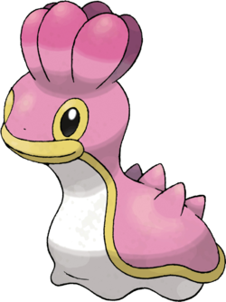

Sancoki #422
Shellos
DE 2
Niveau 1
Taille TP
Type 
Classe d'armure 13
Dé de vie d8
Points de vie 21
Vitesse 6 m, escalade 4.5 m, nage 6 m
| FOR | DEX | CON | INT | SAG | CHA |
|---|---|---|---|---|---|
| 13 (+1) | 10 (+0) | 16 (+3) | 6 (-2) | 10 (+0) | 10 (+0) |
Jets de sauvegarde Constitution
Compétences Survie
Vulnérabilités 

Résistances 


Talents
Glue. TODO TRADUIRE Held items cannot be stolen or knocked away from this Pokémon.
Lavabo. TODO TRADUIRE If an ally within 30 feet is attacked with a water type move, this Pokémon can use a reaction to choose to redirect that attack to themselves instead, gaining an amount of HP equal to half the damage dealt. This does not work on area of effect moves.
Talents cachés
Force Sable. TODO TRADUIRE During a Sandstorm, this Pokémon can double its STAB when it hits an opponent.
Évolution
Sancoki peut évoluer en Tritosor à partir du niveau 8. Quand il évolue, il gagne 12 points de caractéristiques. Il ne peut pas dépasser 20 dans une valeur de caractéristique.
Capacités
Niveau 2 Vibraqua, Boue-Bombe
Niveau 6 Puissance Cachee, Danse Pluie
Niveau 10 Plaquage
Niveau 14 Ocroupi
Niveau 18 Soin